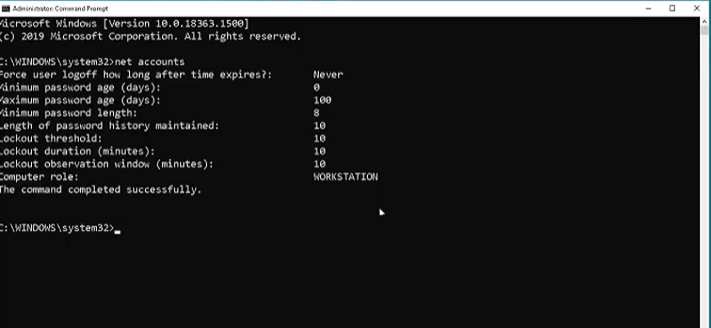
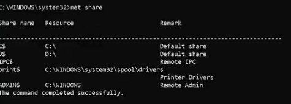
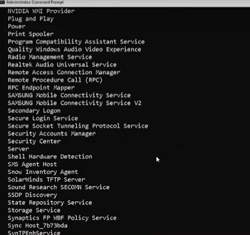

The Net Command
"Net" komutu, Windows işletim sistemi tarafından sağlanan ve ağ bağlantıları, kullanıcı hesapları, paylaşılan kaynaklar, servisler ve diğer ağ bileşenleri gibi çeşitli ağ yönetimi görevleri için kullanılan bir komuttur.
Net Komutları
1-net accounts:Kullanıcı hesaplarıyla ilgili bilgileri gösterir ve yönetir.

2-net share: Dosya paylaşımlarını görebilrsin.
Not: Eğer biri seninle bir paylaşım yaptıysa farkedilmeden görebilirsin.

3-netstat start : Bir ağ hizmetini başlatabiliriz.
